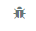

Functionality Overview
This section outlines the functionality provided by KronoDesk® in the areas of help desk ticketing, customer support forums, online knowledge base and user account management.
Dashboards
When a customer first accesses KronoDesk, they are taken to the KronoDesk Customer Homepage. This page is designed to provide them with an easy to use starting point for resolving their support issue. They are provided with tools for searching the online knowledge base, asking questions in the support forums and a link to create a help desk ticket.
The dashboard also includes recent knowledge base articles, news updates, and recent forum posts so that they can keep on top of recent development and contribute back into the support community.
For customer service agents, the Employee Homepage provides them with a consolidated view of their assigned tickets, any tickets not current assigned, recent forum posts, and current news updates so they can see all inbound requests from customers in one single place, ensuring that they are able to monitor the support forums and help desk from a single screen.
Knowledge Base
The KronoDesk® online knowledge base provides the first level of support to customers. Instead of having to constantly respond to the same routine enquiries and support requests, customer support agents can use the built-in knowledge base to create articles related to different topics, categories and products. Knowledge base articles can be linked to multiple categories and also tagged with meta-tags to make searching easier by customers. The system includes full rich-text editor so that articles can be formatted with lists, tables, different text styles and embedded hyperlinks.
Support Forums
The KronoDesk® support forums provide the next level of support to customers. Where a fully codified knowledge base article has not yet been synthesized and created by the support agents, the support forums provide a place where users can search for existing messages concerning the same problem. The support forums thereby provide a community where customers and support agents can post replies to common questions visible to the entire community.
This provides a faster turnaround for customers who can find immediate solutions to their issues and enables the support agents to focus their time on dealing customer issues that have not been previously encountered or customers issues that particularly complex or environment-specific.
Help Desk Ticketing
The KronoDesk® help desk ticket management system provides the final level of customer support. When a customer cannot readily find the solution through either the knowledge base or support forums, they can submit a help desk ticket through KronoDesk's help desk submission system. The system allows them to quickly and easily enter the description of the problem, attach any relevant documents or screenshots, categorize the issue and then submit it for resolution by the support agents.
The customer support agents can use the help desk system to review incoming tickets, assign them to themselves or other support agents as needed, provide suggestions to the customer, or escalate to the next level of support. They can use the system to add notes to the ticket, change the fields, or ask for more information. Any changes made to the ticket will be notified to the customer so that they're kept abreast of changes to their ticket. In addition, the customer can use their customer homepage to see a list of their open tickets together to see at a glance what action has been taken and what recommendations have been made.
User Account Management
KronoDesk® supports the management of an unlimited number of users, which can be administered through the same web interface as the rest of the application, and each user of the system can be given a specific role in the system. In addition, each user has a secure Account management section of the application where they can update their personal information, manage their subscriptions and change their password information.
In addition to these administration functions, each user has their own personalized dashboard view of all the pertinent and relevant information. This feature reduces the information overload associated with managing such a rich source of information, and allows a single customer and employee snapshot to be viewable at all times for rapid decision-making.
Miscellaneous
Artifact Relationships
The sections above have outlined the different features and functions available in the system, and have described the various artifacts managed in the system (e.g. tickets, articles, forums, threads, etc.). To aid in understanding how the information is related, the following diagrams illustrates the relationships between the different artifacts and entities:

Figure 1: The relationships between the various KronoDesk entities
With these overall concepts in mind, the rest of this help manual will outline the functionality in each of the KronoDesk® screens, and provide specific information on how to manage each of the artifacts illustrated above. Note that this manual does not explain the Administration-level functionality of the system; for that, please refer to the KronoDesk® Administration Guide.
Artifact Naming Conventions
On various screens in the system, you will see lists of artifacts (tickets, articles, etc.) together with a unique identification number. In order to make it easier to recognize at a glance which type of artifact the identification number refers to, KronoDesk uses a system of two-letter prefixes which help identify the type of artifact being displayed. The current prefixes used by the system are:
| Artifact | Prefix | Artifact | Prefix |
|---|---|---|---|
| Ticket | TK | Knowledge Base Article | KB |
| Ticket Status | TS | User | US |
| Ticket Type | TT | Forum | FR |
| Ticket Priority | TP | Thread | TH |
| Ticket Resolution | TR | Message | MG |
| Product | PR |
In addition, certain artifacts in the system are displayed with an icon that helps distinguish them from each other, and provides additional context on the state of the artifact:
| Icon | Artifact Description |
|---|---|
| Knowledge Base Article | |
| Forum Category | |
| Forum | |
| Thread | |
| Help Desk Ticket | |
|  | SpiraTeam® Incident |
 |
Artifact has an Attachment |